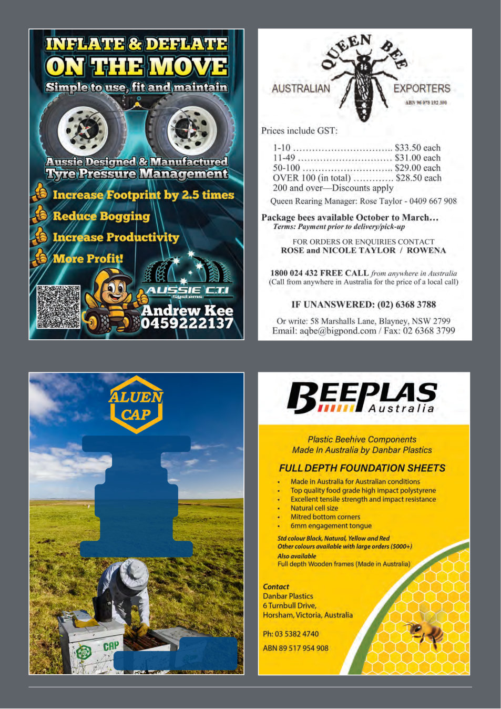

ORGANIC VARROA TREATMENT
OXALIC ACID
95%+ EFFECTIVE
SLOW RELEASE STRIPS
EASY AND SAFE TO USE
NO CONTAMINATON
NO RESISTANCE
NO HARM TO BROOD OR QUEENS
1800 921 520
WWW.CAPPRODUCTS.COM.AU
38 | Published since 1918 by the VAA – founded in 1892